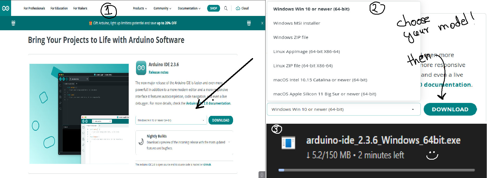
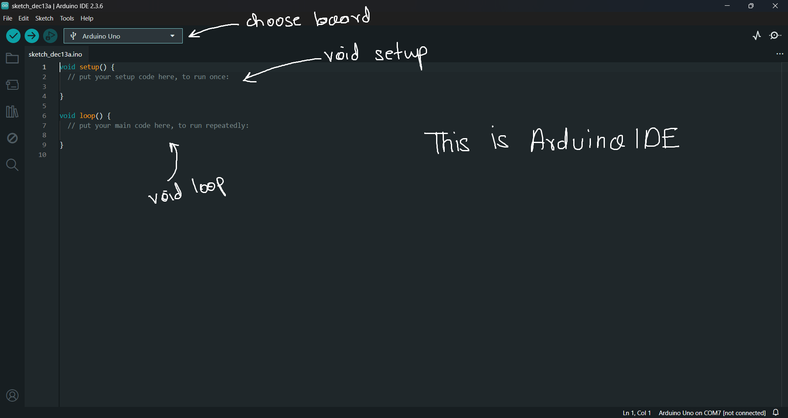
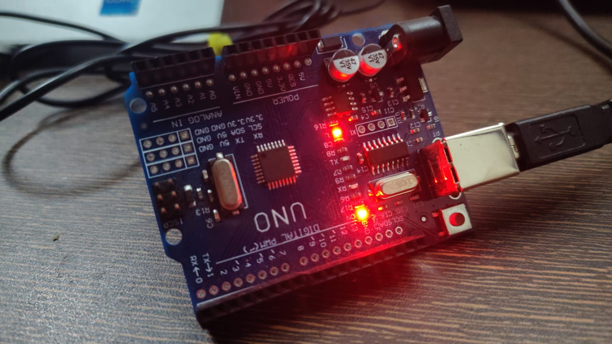

Chapter 3
Before your Arduino can do anything, you need a way to talk to it.
That bridge between you and the hardware is the Arduino IDE.
This chapter will set up your workspace properly—so future projects are smooth, predictable, and frustration-free.
🖥️ What Is the Arduino IDE?
The Arduino Integrated Development Environment (IDE) is the software used to:
Write code (called sketches)
Compile it for the microcontroller
Upload it to the Arduino board
Monitor data coming from the board
It hides a lot of low-level complexity, allowing beginners to focus on logic and circuits rather than compiler settings.
📥 Downloading the Arduino IDE
You can download the IDE from the official Arduino website.
Choose the version based on your operating system:
Windows
macOS
Linux
Once downloaded:
Install it like any normal application
No extra configuration is required for beginners
The Arduino IDE is lightweight, fast, and beginner-friendly.
🔌 Connecting the Arduino Uno
Plug your Arduino Uno into your computer using the USB cable provided for arduino
The power LED on the board should turn ON
Your system will automatically detect the board
If the board lights up, you’re ready to move on.
⚙️ Selecting Board and Port
Inside the Arduino IDE:
Step 1 — Select Board
Go to Tools → Board
Choose Arduino Uno
Step 2 — Select Port
Go to Tools → Port
Select the COM port (Windows) or /dev/tty port (Linux/macOS)
Basically the USB port where you have attached the Arduino.
This tells the IDE where to send your code.
🧱 Understanding the Arduino Sketch Structure
Every Arduino program has two main parts:
void setup() {
// runs once
}void loop() {
// runs repeatedly
}
setup()
Runs once when the board starts
Used for pin configuration, serial setup, initialization
loop()
Runs continuously
This is where your main logic lives
This simple structure is one of the reasons Arduino is beginner-friendly.
📤 Uploading Your First Sketch
Arduino comes with example programs.
Try this:
Go to File → Examples → 01.Basics → Blink
Click Upload
If the upload is successful:
The LED on pin 13 will start blinking
Live demo of Blink program.
Congratulations — you’ve officially programmed a microcontroller.
🐞 Common Beginner Issues
Wrong board selected → upload fails
Wrong port selected → board not detected
Loose USB cable → intermittent connection
Using pins 0 & 1 → serial upload issues
Most problems are small and easy to fix once you know where to look.
Now that we have taken our first step. We will move towards understanding the code which makes it come alive. See you in our next post!